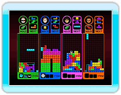

16 |
Multijugador |
 |
Tetris con reglas de batalla normales. Enfréntate a
personas o IAs haciendo líneas a la vez que intentas crear situaciones sin salida (fin de juego) para tus rivales. El primero que lo consiga, gana. El número de líneas que hagas determina el número de bloques de penalización que envías al campo del oponente.
 Las reglas normales son Las reglas normales sonlas mismas que las de "Escalador". Se gana cuando se llega el primero a la meta o cuando el oponente ya no puede seguir con la carrera. Cada vez que un jugador pasa por un punto de control, consigue un "Patear línea".
 Haz las líneas indicadas en verde. Si eliminas a un
Haz las líneas indicadas en verde. Si eliminas a unTetrimino que haya sobre la línea, desaparecerán las líneas verdes que hay detrás. Se gana al ser el primero en hacer todas las líneas o cuando los oponentes no pueden seguir jugando. En el juego por equipos, cuando tu compañero haga una línea, la línea de la posición equivalente de tu campo también desaparecerá.
 Las reglas normales son las mismas que las de "Sombra". Gana el jugador que haya Las reglas normales son las mismas que las de "Sombra". Gana el jugador que hayacompletado el máximo porcentaje al final de la partida. Pero si un jugador consigue el 100% durante el juego, gana automáticamente.
 Las reglas normales son las mismas que las de "Corredor de etapas". Se gana al ser primero en llegar a la meta o cuando los oponentes no pueden seguir jugando. Las reglas normales son las mismas que las de "Corredor de etapas". Se gana al ser primero en llegar a la meta o cuando los oponentes no pueden seguir jugando.
 Juego para dos jugadores en el que los participantes trabajan juntos para hacer líneas en un campo el doble de ancho de lo normal (20 bloques). Los Tetriminos que entran en el campo son diferentes para el J1 y el J2. Sin embargo, se aplican las reglas normales de Tetris. Ambos jugadores comparten "Contener".
Juego para dos jugadores en el que los participantes trabajan juntos para hacer líneas en un campo el doble de ancho de lo normal (20 bloques). Los Tetriminos que entran en el campo son diferentes para el J1 y el J2. Sin embargo, se aplican las reglas normales de Tetris. Ambos jugadores comparten "Contener".
 Una competición entre dos jugadores en un campo el doble de ancho de lo normal (20 bloques). Las reglas difieren en gran medida de las del Tetris normal puesto que los jugadores compiten para ver quién puede abarcar más espacio con sus Tetriminos (el espacio que ocupan los Tetriminos en sí también cuenta). Los jugadores controlan Tetriminos por turnos. El espacio se lo queda el jugador cuyo Tetrimino cierre una área. Gana el jugador que al final de la partida tenga el área total mayor. Una competición entre dos jugadores en un campo el doble de ancho de lo normal (20 bloques). Las reglas difieren en gran medida de las del Tetris normal puesto que los jugadores compiten para ver quién puede abarcar más espacio con sus Tetriminos (el espacio que ocupan los Tetriminos en sí también cuenta). Los jugadores controlan Tetriminos por turnos. El espacio se lo queda el jugador cuyo Tetrimino cierre una área. Gana el jugador que al final de la partida tenga el área total mayor.
|

 |
 |
 |